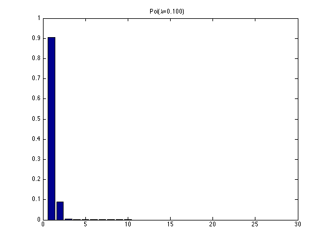
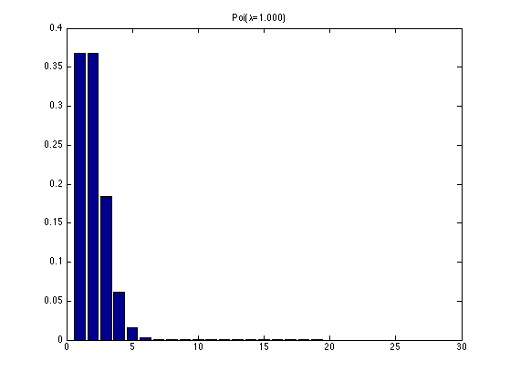
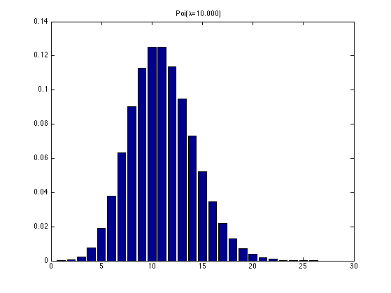
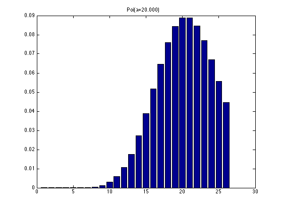

Poisson Plot Demo
% This file is from pmtk3.googlecode.com lambdas = [0.1 1 10 20]; figure; for i=1:4 figure; xs = 0:25; mu = exp(poissonLogprob(struct('lambda', lambdas(i)), xs)); h = bar(mu); title(sprintf('Poi(%s=%5.3f)', '\lambda', lambdas(i))) printPmtkFigure(sprintf('poissonDemo%d', i)) end   